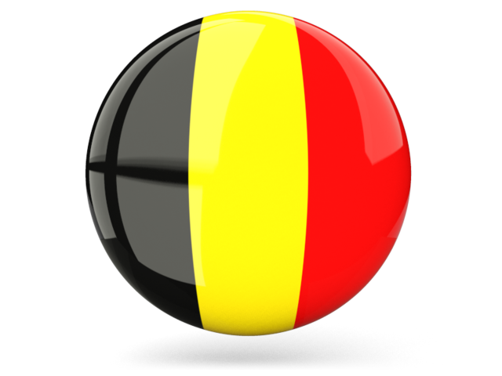

BELGIQUE

Belgique
France
Canada
La Belgique est un pays fascinant pour son riche héritage
artistique et architectural. Des trésors tels que la Grand-
Place de Bruxelles et les canaux de Bruges attirent les visiteurs
du monde entier. Les Belges sont connus pour leur amour
de la bonne cuisine, en particulier les gaufres, les frites et le
chocolat délicieux. La Belgique est également le pays de la
bande dessinée, avec des personnages célèbres tels que Tintin
et les Schtroumpfs.